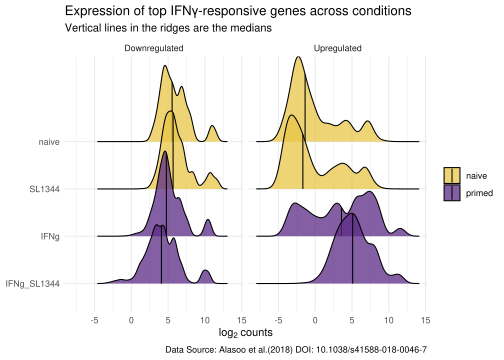

All missing values were identified in columns related to sample purity. Before deciding how to handle these missing values, we investigated whether their occurrence followed any pattern. For example, if missing values were associated with specific donors, experimental conditions or other sample characteristics.
# A tibble: 12 × 13
sample_id donor condition replicate condition_name SL1344 IFNg received_as
<chr> <chr> <chr> <dbl> <chr> <chr> <chr> <chr>
1 jorr_A jorr A 1 naive control naive alive
2 jorr_B jorr B 1 IFNg control prim… alive
3 jorr_C jorr C 1 SL1344 infected naive alive
4 jorr_D jorr D 1 IFNg_SL1344 infected prim… alive
5 kolf_A kolf A 1 naive control naive frozen
6 kolf_B kolf B 1 IFNg control prim… frozen
7 kolf_C kolf C 1 SL1344 infected naive frozen
8 kolf_D kolf D 1 IFNg_SL1344 infected prim… frozen
9 nusw_A nusw A 1 naive control naive frozen
10 nusw_B nusw B 1 IFNg control prim… frozen
11 nusw_C nusw C 1 SL1344 infected naive frozen
12 nusw_D nusw D 1 IFNg_SL1344 infected prim… frozen
# ℹ 5 more variables: mean_purity <dbl>, max_purity <dbl>, sex <chr>,
# rna_concentration <chr>, purity_bins <chr>
The NAs are grouped by donor, so the decision was taken to only delete the rows related to the donors that have no data in all columns of purity (filtering with the function if_all()) in their samples. This way, we make sure that further analysis is made on reliable data.
# A tibble: 10 × 13
sample_id donor condition replicate condition_name SL1344 IFNg received_as
<chr> <chr> <chr> <dbl> <chr> <chr> <chr> <chr>
1 hayt_C hayt C 1 SL1344 infected naive frozen
2 meqo_A meqo A 1 naive control naive alive
3 golb_A golb A 1 naive control naive frozen
4 yemz_C yemz C 1 SL1344 infected naive frozen
5 febc_B febc B 1 IFNg control prim… frozen
6 pahc_D pahc D 1 IFNg_SL1344 infected prim… frozen
7 eipl_A eipl A 1 naive control naive frozen
8 coyi_B coyi B 1 IFNg control prim… frozen
9 oeoo_A oeoo A 1 naive control naive frozen
10 meqo_B meqo B 1 IFNg control prim… alive
# ℹ 5 more variables: mean_purity <dbl>, max_purity <dbl>, sex <chr>,
# rna_concentration <chr>, purity_bins <chr>
Fixing columns naming
Two columns had names that were not intuitive or consistent: “SL1344”, which indicates whether a sample is a control or was infected with Salmonella, and “IFNg”, which indicates whether a sample was exposed to IFNγ (primed) or not (naive). To make the dataset easier to understand and keep the naming consistent, these columns were renamed.
# A tibble: 4 × 13
sample_id donor condition replicate condition_name SL1344_infection
<chr> <chr> <chr> <dbl> <chr> <chr>
1 babk_A babk A 2 naive control
2 babk_B babk B 2 IFNg control
3 babk_C babk C 2 SL1344 infected
4 babk_D babk D 2 IFNg_SL1344 infected
# ℹ 7 more variables: IFNg_status <chr>, received_as <chr>, mean_purity <dbl>,
# max_purity <dbl>, sex <chr>, rna_concentration <chr>, purity_bins <chr>
As we can see from the output, the samples that was received as alive/frozen are from only one donor. For consistency purposes, we decide to also remove the data from this donor.
The authors of the original paper did not filter low-count genes before normalisation (nor do they mention such action), so we used the raw counts to identify them. Genes with consistently low read counts were removed to reduce their influence on the analysis: only genes with at least 10 counts in a minimum of 80 samples were retained
We use semi_join() to remove the same genes from the normalised data. This function keeps only the rows of counts_norm whose gene_id also appears in the filtered raw data, without adding any columns from it.
clean_counts_norm_df <- counts_norm_df |>semi_join(clean_counts_raw_df, by ="gene_id")
The dataset was transformed from wide to long format using pivot_longer(). This structure facilitates the integration of the count data with the sample metadata and supports subsequent exploratory analysis and visualization.
The two datasets were merged using the sample_id column as a common identifier. The inner_join() was used to retain only the samples present in both datasets, ensuring that each gene count was associated with its corresponding sample information.
merged_data <- counts_norm_long|>inner_join(clean_sample_meta, by ="sample_id")merged_data |>slice_sample(n =10)
# A tibble: 10 × 15
gene_id sample_id log2_counts donor condition replicate condition_name
<chr> <chr> <dbl> <chr> <chr> <dbl> <chr>
1 ENSG000001680… yemz_C 4.45 yemz C 1 SL1344
2 ENSG000001201… hiaf_C 3.69 hiaf C 1 SL1344
3 ENSG000002708… ffdm_D 1.74 ffdm D 1 IFNg_SL1344
4 ENSG000001752… sukz_A 6.69 sukz A 1 naive
5 ENSG000001144… oarz_C_2 1.55 oarz C 2 SL1344
6 ENSG000002332… iasn_A -1.18 iasn A 1 naive
7 ENSG000001702… yuze_C -1.59 yuze C 1 SL1344
8 ENSG000002357… golb_A 0.335 golb A 1 naive
9 ENSG000002511… zisa_B -0.784 zisa B 1 IFNg
10 ENSG000002450… vorx_B 2.86 vorx B 1 IFNg
# ℹ 8 more variables: SL1344_infection <chr>, IFNg_status <chr>,
# received_as <chr>, mean_purity <dbl>, max_purity <dbl>, sex <chr>,
# rna_concentration <chr>, purity_bins <chr>
Consistency in sample_ids
Some sample IDs carried a ” _2 ” at the end of the sample id , which marked a replicate and made their format inconsistent with the rest. Now that the datasets are merged, we removed the suffix so all sample IDs follow the same format.
Note: This is the same pipeline used in 05_analysis_1.qmd, but only for the infected cells.
To be able to see the differences in gene expressions in infected cells, we kept only the infected samples. Within these samples, the two groups to compare are the naive and the primed cells. We then converted IFNg_status into a factor with “naive” as the first level (set to be the reference).
Fit a linear model for every gene. We use mutate() together with map(), which applies the same function to each element of data column. The function is lm() with the formula “log2_counts ~ IFNg_status”.
For each gene, the model estimates the mean expression in naive cells (the intercept) and the difference between primed and naive cells. Since the values are on a log2 scale, this difference is the log2 fold change.
From the unnested results we kept only the relevant rows and the columns needed for further analysis.
We do a multiple testing correction, adjusting the p.values using p.adjust(), which gives the q.value. Finally, we used case_when() to classify each gene in a new column: a gene is “up” if q.value < 0.05 and the log2 fold change is above 1 (at least twofold higher in primed cells); “down” if q.value < 0.05 and the log2 fold change is below -1 (at least twofold lower in primed cells), and “not significant” otherwise (q.value >= 0.05) .
Ridge Plot: IFNγ, not infection alone, shifts expression of response genes
We will now select the top 30 upregulated and downregulated genes, pooled across all donors, selected from the primed vs naive comparison in infected cells.
plot_data <- merged_data |>inner_join(top_genes, by ="gene_id") |>mutate(direction =factor(sign, levels =c("down", "up"),labels =c("Downregulated", "Upregulated")),condition_name =factor(condition_name,levels =c("IFNg_SL1344", "IFNg", "SL1344", "naive")) )ridgeplot <-ggplot(plot_data, aes(x = log2_counts, y = condition_name, fill = IFNg_status)) +geom_density_ridges(alpha =0.75, quantile_lines =TRUE, quantiles =2) +facet_wrap(~ direction) +scale_fill_manual(values =c(naive ="#E8C547", primed ="#5B2A86"),name =NULL) +labs(title ="Expression of top IFNγ-responsive genes across conditions",subtitle ="Vertical lines in the ridges are the medians",caption ="Data Source: Alasoo et al.(2018) DOI: 10.1038/s41588-018-0046-7",x =expression(log[2]~"counts"), y =NULL) +theme_minimal()ridgeplot
Picking joint bandwidth of 0.344
Picking joint bandwidth of 0.651

Upregulated genes (right panel)
Expression is low in unprimed conditions. The medians being around -2 also confirm that these genes are barely expressed.
The distribution shifts right in the primed conditions, especially for IFNg_SL1344, where the shift is of roughly 7 log2 units compared to the unprimed conditions.
Comparing SL1344 and naive conditions, they look very similar. Thus, infection by itself does not turn these genes on, meaning the change is driven by IFNγ priming.
SL1344 alone looks almost the same as naive. Infection by itself does not turn these genes on, so the change is driven by IFNγ priming.
Nonetheless, IFNg_SL1344 is slightly higher than IFNg alone, which may mean that infection may add a “small boost” on top of priming. The IFNγ ridge also has a bump on the left that doesn’t exist in IFNg_SL1344, which may mean that a few genes respond more weakly without infection.
Downregulated genes (left panel)
As expected, the shift goes in the opposite direction, albeit much smaller.
The distributions overlap a lot, as these genes are moderately to highly expressed. This points to downregulation by IFNγ being weaker than upregulation.
As with the upregulated genes, SL1344 alone is almost identical to naive, so priming is the main driver.
Conclusion
IFNγ priming is the main driver of the expression changes. The primed conditions separate from the unprimed ones in both panels, and infection with SL1344 alone does little. The effect is strong for induced genes and subtle for repressed ones.